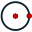
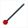
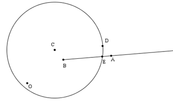
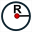

Example of an iterative construction implementation.
A construction is implemented in an iterative way when it is repeated several times with, at each stage, some final objects taking place of sources objects for the next implementation of the same construction.
It is very important to understand that, when a construction is created, the order of sources objects is the order in which the sources objects have been chosen but , on the contrary,the order of final objects is the order in which the final objects have been created. Furthermore, numerical sources objects are always the first sources objects.
In this example, we are going to draw a towing curve.
For this, we must create the construction that will be iterated.
Let us first verify if the angle unity of the figure is the radian (menu Options - Current figure, tab Angle unity).
We will first create a calculation named a that will contain 0.3 for formula (icon  ).
).
Then we create a free point we will call O (icon ). This will be the center of our rotation.
Let us now create two other free points we will call A and B.
With tool  , create the image of B through the rotation of center O and angle a . Name this nex point C.
, create the image of B through the rotation of center O and angle a . Name this nex point C.
With tool  , create the imageof C through the translation of vector BA (click on B, A eand C). We will name this point D.
, create the imageof C through the translation of vector BA (click on B, A eand C). We will name this point D.
Now create the circle with center C and going through D (icon ), then the half line with origin B and going through A (icon ).
With tool  , create the intersection of the circle and the half line. This point E will our first final object.
, create the intersection of the circle and the half line. This point E will our first final object.
The final objects must have been created in the same order as the initial objects they will replace. Therefore we cannot chose C as second final object because C was created before E.
So we are going to create a clone of this point : menu item Create - Object clone and click on point C.
Our figure is now ready to create the construction.
Let us start defining the numerical sources objects. Use menu item Construction - Sources objects choice - Numerical. With button Insert, add calculation a to the list of numerical sources objects and validate.
Now let us choose numerical sources objects (3 points). Use menu item Construction - Sources objects choice - Graphical, and click, in this order, on O, A and B (this order is important).
We will now choose the final objects (they all will be graphical). Use menu item Construction - Final objects choice - Graphical. Click on E and the point of point C (choose clone point in the dialog box taht pops up). Right click the mouse button to indicate that all final objects have been created.
We will ask all final points E to be joined through a broken line. Therefore it is better if points E and A are hidden. Use tool  to get them masked.
to get them masked.
Now use menu item Construction - Finish current construction.
In the dialog box popping up, enter CircTow as Name of the construction and in the field infos :
#1: The rotation angle
#2: The center of rotation
#3: The point to be towed
#4: The towing point
Validate with OK.
Use menu item Constructions - Save construction of figure to file to save CircTow at the place of your choice on your computer (please note this place).

We will now create a figure in which we will implement our construction in an iterative way.
Use icon  to create a new figure.
to create a new figure.
With menu item Constructions - Incorporate a construction in figure from file, incorporate in that figure the construction CircTow you have just saved in a file.
Let us start creating three calculations with tool :
A calculation named R containing value 3.
A calculation named L containig comme valeur 2.
A calculation named dt containig for formula 8*2*pi/500 (we want to turn eight times around the circle).
Use icon to create three formula editors associated to R, L and dt as below.
Now create a free point and a circle with center this point and radius R (icon  ).
Create a point N linked to this circle (icon  ), then a circle with center N and radius L. Then create a point M linked to this last circle.
), then a circle with center N and radius L. Then create a point M linked to this last circle.
We now have to create a macro the purpose of which will be to create the towing curve using construction CircTow.
Use menu item Macro - New macro - Construction macro - iterative.
Fill in the dialog box as below and validate (don't forget checking the check box Join the first final point of each itération through a broken line).
The two final objects to be used in each iteration are dt and the circle center.

First a dialog box pops up asking for the rotation angle : click on dt and validate.
Then you are asked in the indication line to click on the rotation center : click on the circle center.
Thow you are asked to click on the point to be towed : Click on M.
Last you are asked to click on the towing point : Click on N.
The macro appears on the figure.
Save your figure in a file (before executiong the macro).
Now clik on the macro execution tool ( ).
).
You get the figure below. You can capture M, N change the values of R and L.
Beware : If you save your figure in a file now, you will get a very big file because our figure contains now several thousands of objects.

To be noted : It is also possible to implement this construction in an iterative way with menu item Constructions - Implement a construction in an iterative way.
Created with the Personal Edition of HelpNDoc: Full featured EPub generator